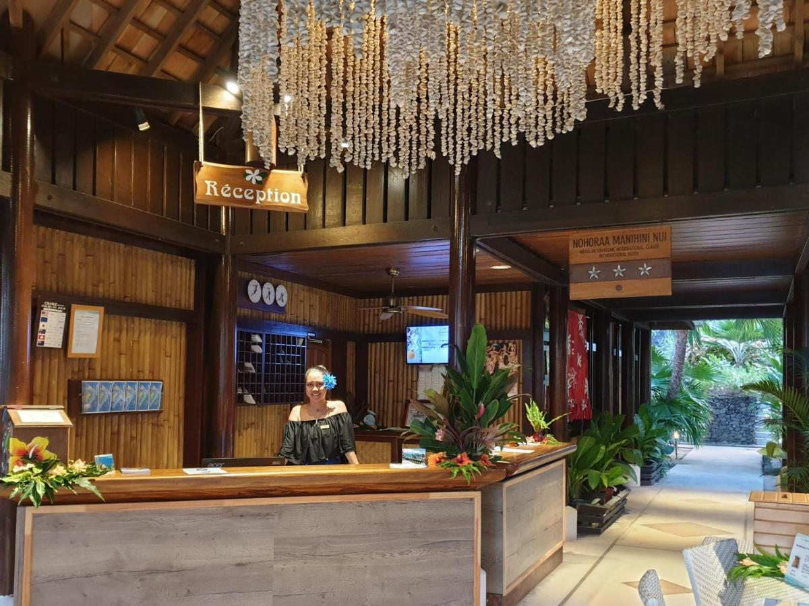
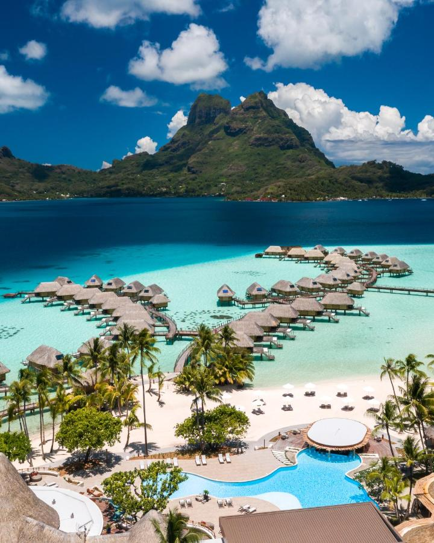
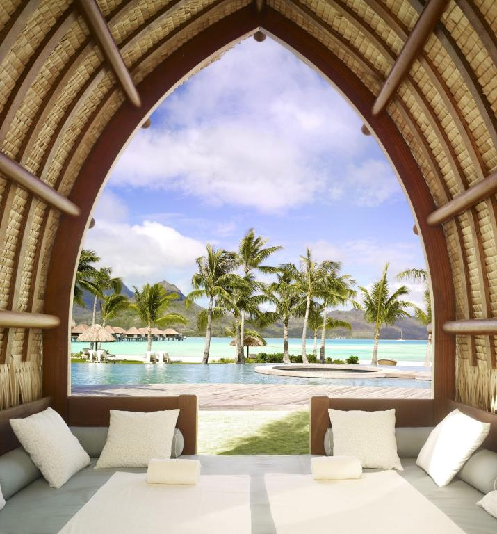
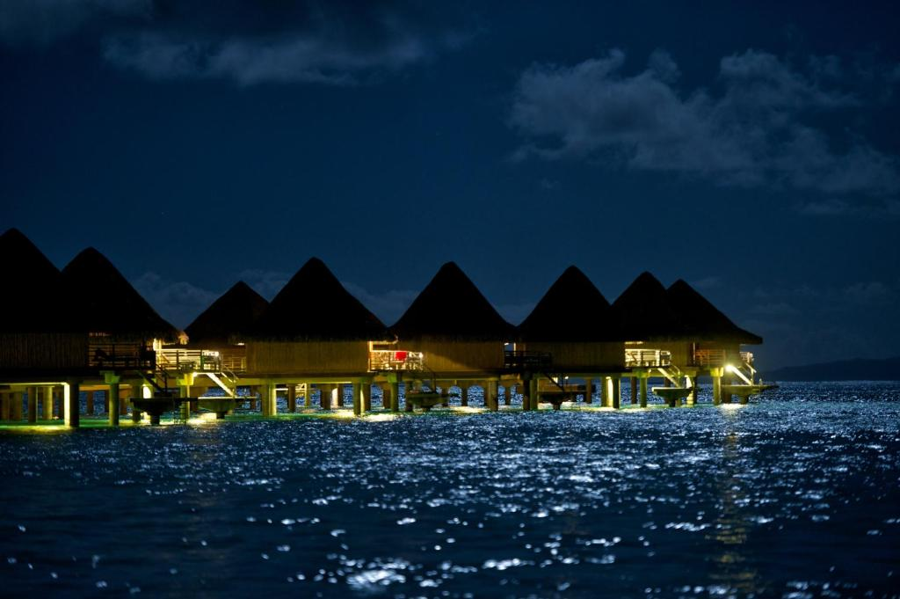

Bora Bora es un paraíso insular situado en la Polinesia Francesa, en el Pacífico Sur, cuya atmósfera es el mar tropical y tiene dos estaciones fundamentales: seca y húmeda. Una isla en medio del Océano Pacífico inventariada como un foco de visitante por completo. Abarcado por un océano azul turquesa y una espléndida vegetación, aquí se puede apreciar los milagros de una cabaña y la tranquilidad de la naturaleza.
| Hotel | Estrellas | Vista | Precio |
|---|---|---|---|
| Maitai BoraBora | ⭐⭐⭐ |  | Booking |
| Le Bora Bora by Pearl Resorts | ⭐⭐⭐⭐ |  | Booking |
| Four Seasons Resort Bora Bora | ⭐⭐⭐⭐⭐ |  | Booking |
| InterContinental Bora Bora Le Moana Resort, an IHG Hotel | ⭐⭐⭐⭐ |  | Booking |
- Playa Punta Matira
- Playa de Motu Tevairoa
- Playa de Motu Piti Aau
- Las costas de Tahaa
Lugares a visitar
- Idioma oficial: francés y haitiano
- Moneda Oficial: francos franceses
- Su nombre original era "Pora by mai" que significa "hecho por los seres divinos"
- El Hotel Bora Bora abrió sus entradas en 1961, y después de nueve años construyó
las principales cabañas sobre pilotes en el estanque de mareas.